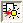

Layout Shorts Tab
Access with:
Use the Layout Shorts tab for interactive short isolation. The tab provides a summary view and a detailed view of shorts in the design.
Description
Summary View — A high-level summary of the shorts in the design, with highlighting options available in a right-click menu. The selected short is displayed in the detailed view. See Figure 1.
Detailed View — A detailed listing of the polygons that make up a short, with highlighting options available in a right-click menu. The polygons that are listed can be filtered by cell, layer, and net. (Note: filters apply to highlighting from the detailed view, but not to the summary view). Net names can be assigned to unassigned nets to aid in short isolation.
Objects
Column |
Description |
Actions and Comments |
|---|---|---|
Short |
Sequential number for short. |
Select a short to display it in the detailed view. Right-click for a highlight menu. Note: Highlighting shorts from the summary view always highlights the complete short regardless of the filter settings applied in the detailed view. |
Shorted Nets |
The nets that are shorted, and the cell name. |
Expand and collapse tree. Right-click for a highlight menu. |
Polygons |
Total number of polygons in the short. |
None. |
Short Texts |
The text, text coordinates, and text layer. |
Click net names or locations to view them in a connected viewer, or right-click for a pop-up menu. |
Column |
Description |
Action and Comments |
|---|---|---|
Column selection. |
Click the column selection icon to see the column selection dropdown list. |
|
P# |
Polygon number. |
|
Cell |
The cell for the polygon. |
Click the filter icon, , for a dropdown list to select the cells that are displayed in the detailed view. Note: The cell column is not displayed if none of the shorts in the design cross a cell boundary. |
Layer |
The layer for the polygon. |
Click the filter icon, , for a dropdown list to select the layers that are displayed in the detailed view. The highlight color for each layer is also displayed in this list. Use the Highlights Tab to change the highlight color for a layer. |
Net |
Indicates the net name, with these conventions:
|
Click a non-texted net to make a net name assignment using a dropdown list. See Figure 1 in the section “Assigning Net Labels to the Polygons in a Short”. Click the filter icon, , for a dropdown list to select the nets displayed in the detailed view.
See “Verifying Short Repairs” for requirements to enable the REMOVE assignment and its use. |
Vertex Count |
The vertex count for the polygon. An optional column. |
Click the column filter
icon |
Vertices |
The vertices for the polygon, in the format: x1,y1 x2,y2 … An optional column. |
Click the column filter
icon |
Usage Notes
The following notes apply to the detailed view:
Filtering — You can filter the polygons listed in the detailed view by using the filter icon, , included with the Cell, Layer, and Net columns. The filters apply to all highlighting actions using the right-click menu in the detailed view. Filters do not apply to highlighting actions in the summary view.
Highlighting — Use the Short Isolation Toolbar or the right-click menu to highlight a selection in the detailed view. Any filters that are set apply to actions from the right-click menu.
Highlight in Short Cell — This option is on by default, and highlights short polygons in cell coordinate space rather than top-level coordinate space. Change the setting using the option button  in the Short Isolation Toolbar.
Highlight > Use Layer Colors —A toggle selection. When selected, highlight layers in supported viewers are colored with the colors specified on the Highlights Tab. Supported viewers for color matching: Calibre DESIGNrev, Cadence Virtuoso, and Synopsys IC Compiler. With the Calibre DESIGNrev layout viewer, highlight layers are also labeled with the layer name. See “Setting Highlight Color in Calibre RVE for LVS, PERC, and PEX” for more highlight color options.